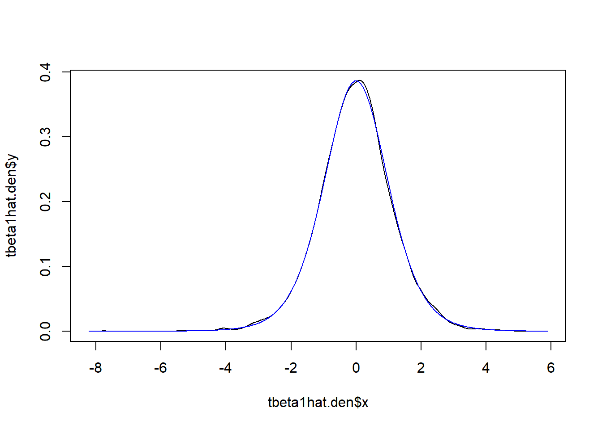
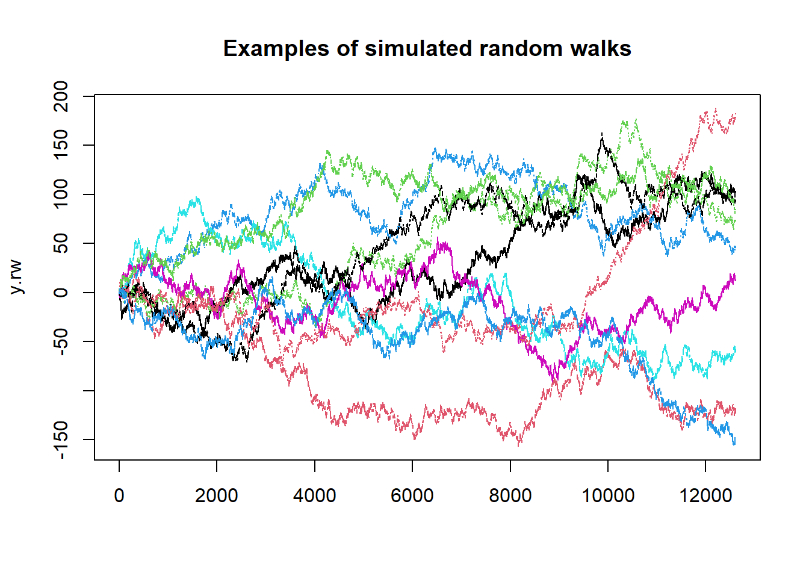
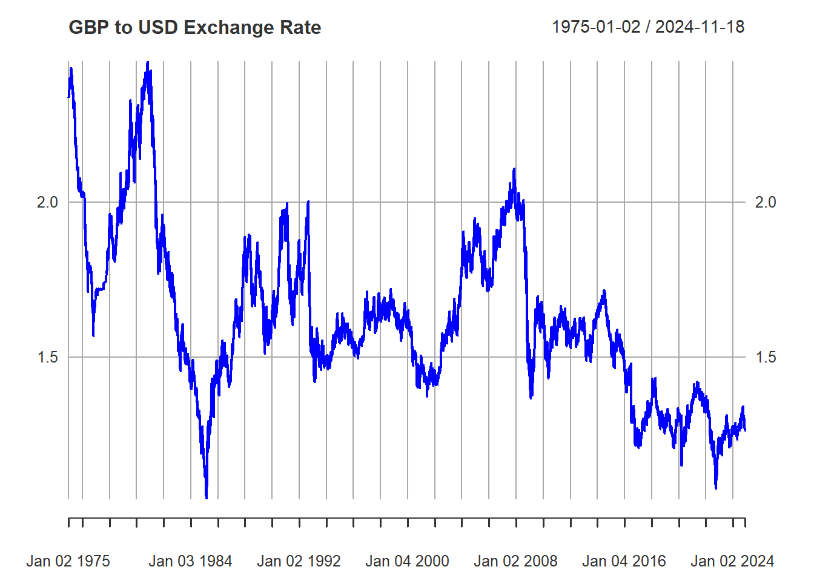

In this walkthrough we will learn why you may be interested in running Monte Carlo simulations and how to implement them.
The issue we are tackling here is that we wish to understand how a certain statistic behaves. Let’s set a context here. Say you are running an Augmented Dickey Fuller test to check whether a certain series \(y_t\) is stationary or has a unit-root (More on unit root testing).
So, being a good econometrics student you know that you should be running the following regression model (here we ignore a trend and augmentation terms)
\[\begin{equation} \Delta y_t = \mu + \gamma y_{t-1} + w_t \end{equation}\]
It is the coefficient \(\gamma\) that will reveal if series \(y\) is stationary (\(\gamma < 0\)) or not (\(\gamma \geq 0\)). We use the t-test statistic to test this.
\[\begin{equation} t_{\gamma} = \frac{\hat{\gamma}}{se_{\gamma}} \end{equation}\]
to test \(H_0: \gamma = 0\) against \(H_A: \gamma <0\).
Recall that to test any hypothesis we need to know what the distribution of the test statistic is if \(H_0\) is valid.
Famously, \(t_{\gamma}\) does not have a standard distribution (like a t-distribution one would normally assume such tests for regression coefficients to have).
In this walkthrough we shall illustrate how you can simulate the actual distribution of this test statistics.
When yo apply the ADF test you will estimate the above regression using a particular series, say a time-series of interest rates. You then get one estimated test statistic. Just from one such series you cannot get an actual distribution of that test statistic. In order to complete your inference, i.e. decide whether on the basis of this one test statistics you should reject the \(H_0\).
As an applied researcher you rely on someone either having done some theoretical work to figure out what the distribution of the test statistic (assuming \(H_0\) is true) is. If you cannot derive the theoretical distribution you may want to simulate a distribution (this will not always work, see the note below).
To do that you need to be clear what the null hypothesis is. Here it is
\[\begin{equation} \Delta y_t = \mu + 0 y_{t-1} + w_t \end{equation}\]
or alternatively that
\[\begin{equation} y_t = \mu + 1 \cdot y_{t-1} + w_t \end{equation}\]
This is what is called a random walk with drift (the drift being \(\mu\)). The steps of a Monte-Carlo simulation are as follows:
In step 4) you then obtain the distribution of the test statistic if the \(H_0\) is true.
CAUTION: This general approach only works if the choice of parameters in step 1 (here \(\mu = 0\) and \(Var(w_t)=1\)) does not change the distribution. If that is the case, the test statistic is called a pivotal statistic. It turns out that \(t_{\gamma}\) is pivotal, i.e. its distribution does not depend on the actual values of \(\mu0\) and \(Var(w_t)\). Demonstrating that a particular test statistic is pivotal is not straightforward and goes beyond what we wish to achieve in this walkthrough.
In the above recipe for a Monte-Carlo study we need to simulate
random processes \(y_t\). This requires
the generation of random variables \(w_t \sim
N(0,1)\). In R you can draw random variables from many
different distributions. To generate random variables from a
standard normal distribution we use the rnorm function.
It is important to understand that random numbers generated by computers are actually not real random numbers. Let’s demonstrate this. First we generate three random numbers from a standard normal distribution.
rnorm(3)## [1] 0.1005 2.3506 0.3519Let’s generate another set of three.
rnorm(3)## [1] 0.4076 1.7377 -0.6720So far all is good. Every time we get new random values. Let’s repeat
the above exercise, but precede the random number generation with the
set.seed() command
set.seed(1)
rnorm(3)## [1] -0.6265 0.1836 -0.8356rnorm(3)## [1] 1.5953 0.3295 -0.8205So far nothing seems changed. Now run the same three lines again
set.seed(1)
rnorm(3)## [1] -0.6265 0.1836 -0.8356rnorm(3)## [1] 1.5953 0.3295 -0.8205What do you observe? The simulated values are identical to the previous random values.
So now the random values don’t look as random anymore. For all
intends and purposes, random draws after calling the
set.seed(1) command are random. But you can always go back
to the same random draws by resetting the seed to the same number (here
1, but it could be any number). You could think of this as
a infinitely long list of random numbers. When you start R and do not
set.seed() then R will start at some random place on that
line. By using set.seed() you can return to any particular
place on that line.
When you do a simulation study we typically set a seed at the beginning so that the next time you run the simulation you can replicate your results.
Let’s start with a simple example where we know how a test statistic should be distributed. Consider the linear regression model
\[\mathbf{y} = \mathbf{X} \mathbf{\beta} + \mathbf{u}\]
where \(\mathbf{X}\) is a \((T \times (k+1))\) matrix of regressors (one constant and \(k\) variables) and \(u\) is a \((T \times 1)\) vector of white noise error terms, here drawn from a standard normal distribution and \(T\) is the sample size. For a \(k=1\) this can also be written as
\[\mathbf{y} = \beta_0 + \mathbf{x}\beta_1 + \mathbf{u}\]
or in observation wise form
\[y_t=\beta_o + \beta_1 x_t+u_t.\]
If the regressor is exogenous then we know that the distribution of the t-test for \(\beta_1\), testing a correct null hypothesis \(t=(\hat{\beta_1}-\beta_1)/se_{\hat{\beta_1}}\) is t-distributed with \(T-2\) degrees of freedom. Let’s verify this with a Monte-Carlo simulation study.
Let’s implement the four steps of a Monte-Carlo simulation listed above:
Let’s set the DGP as follows
\[\mathbf{y} = 0 + \mathbf{x} \cdot 0.5 + \mathbf{u}\]
with sample size \(T = 10\) let the \(N\) values of \(\mathbf{x}\) be drawn from a uniform distribution on \([0,1]\) and draw the \(N\) values of \(\mathbf{u}\) from a standard normal distribution.
N = 10000 # number of simulations
T = 10 # Sample size
beta0 = 0
beta1 = 0.5
set.seed(123)
start.time1 <- Sys.time() # not essential just to check running time
# creates the x values from uniform random values
x = matrix(runif(T*N,min=0,max = 1),T,N)
# creates the error terms from standard normal
u = matrix(rnorm(T*N),T,N)
# creates the y values according to the DGP
y = beta0 + x*beta1 + u
end.time1 <- Sys.time()
time.taken1 <- end.time1 - start.time1
time.taken1## Time difference of 0.009683 secsThis generated \(N\) series each of
length \(T\). They are stored in the
columns of y and the values for \(\mathbf{x}\) are in the respective columns
of x. At first sight it may not be super intuitive how we
can create 10000 series with just three lines of code.
You could think of achieving the same using a loop.
start.time2 <- Sys.time() # not essential just to check running time
# create storage matrix for y and x
y2 <- matrix(0,T,N)
x2 <- matrix(0,T,N)
# Note that we would typically not have to save the error terms
for (n in seq(1,N)) {
x2temp <- runif(T,min=0,max = 1)
x2[,n] <- x2temp
u2temp <- rnorm(T)
y2temp <- beta0 + beta1 * x2temp + u2temp
y2[,n] <- y2temp
}
end.time2 <- Sys.time()
time.taken2 <- end.time2 - start.time2
time.taken2## Time difference of 0.05241 secsGoing through the loop achieved the same think, and may initially be more intuitive, but it also took a lot longer.
Whenever you can avoid loops you should.
In y and x we now have our data saved,
N versions (saved in N columns). Now we need
to go to each of these N columns and calculate the test
statistic. Here we will test \(H_0: \beta_1 =
0.5\) versus \(H_A:\beta_1 \ne
0.5\), hence we are testing a correct null hypothesis.
# storage matrix for estimated t-tests
tbeta1hat <- matrix(0,N,1)
for (n in seq(1,N)) {
lmtemp <- summary(lm(y[,n]~x[,n]))
# when storing a regression summary coefficients are stored in
# the first column of $coefficients and standard errors in the 2nd column
tbeta1hat[n,1] <- (lmtemp$coefficients[2,1] - beta1)/lmtemp$coefficients[2,2]
}In tbeta1hat we have now saved the t-test statistics
testing \(H_0: \beta_1 = 0.5\) versus
\(H_A:\beta_1 \ne 0.5\). As we
simulated N datasets, we also have N of these
test statistics. All of which are testing a correct null hypothesis,
i.e. that \(\beta_1=0.5\).
Now that we do have N test statistics we can describe
these. Given our assumptions we know that the t-tests are t-distributed
with 8 (\(=T-2\)) degrees of freedom.
For instance, if we tested at a 5% significance level we would reject
the null hypothesis if the absolute value of t-test was larger than
2.306. You can get that critical value from a table or from:
# note, as two tailed we need 2.5% in each tail
cv <- qt(0.975,8)
cv## [1] 2.306Now we can check how many of our simulated t-tests would reject \(H_0\). We would expect, if testing at a 5% significance level that 5% of our tests (incorrectly) reject the correct \(H_0\). Recall that the null hypothesis is true for all our simulated processes.
H0rejrate <- sum(abs(tbeta1hat)>cv)/N
print(H0rejrate)## [1] 0.0515Here we reject 0.0515, ie in 5.15% of our simulations the correct \(H_0\) is incorrectly rejected. This is exactly as it should be, a well calibrated or correctly sized test.
We can also display the distribution. We call the
density function which estimates the empirical distribution
of tbeta1hat. Then we display this (black line), along with
the theoretical distribution (\(t_{8}\)) which we get using the
dt function which gives us the density of the
t-distribution.
# get empirical density
tbeta1hat.den <- density(tbeta1hat)
# use the x and y outputs from the density function
plot(tbeta1hat.den$x,tbeta1hat.den$y,type = "l")
lines(tbeta1hat.den$x,dt(tbeta1hat.den$x,8),col = "blue")
You can see that the simulated test distribution is very close to the theoretical distribution
To solidify your understanding you could do the following
The simplest non-stationary proccess integrated of order one would be
\[y_t = y_{t-1}+e_t\] It has a special
name, they are called a random walk. Also note that this implies \(\Delta y_t = e_t\). Let’s simulate a few
random walks of length T=12610 (this specific
T is for a reason soon becoming apparent).
N = 10
T = 12610
set.seed(1234)
y.rw = apply(matrix(rnorm(T * N),T,N), 2, cumsum)In y.rw we now have 10 simulated random walks. Clearly
we managed to do that without a loop. What the code did was to first
simulate a \((T \times N)\) matrix of
error terms (matrix(rnorm(T * N),T,N)). Then we take this
matrix and apply the cumsum function to dimension
2, i.e. to each column of data. This means that function
cumsum is applied across rows.
In order to understand why this simulates a random walk, note the following.
\[\begin{eqnarray} y_0 &=& 0 \text{ by assumption}\\ y_1 &=& y_{0}+\epsilon_1\\ y_2 &=& y_{1}+\epsilon_2 = \epsilon_1 + \epsilon_2\\ y_3 &=& y_{2}+\epsilon_3 = \epsilon_1 + \epsilon_2 + \epsilon_3 \end{eqnarray}\]
or in general
\[y_t = \Sigma_{\tau=1}^t \epsilon_{\tau}\]
So what we need to get \(Y_t\) is to
sum up all error terms up to time \(t\). That is exactly what the
cumsum function does.
So let’s have a look at the 10 simulated random walks. Plotting
columns in matrices is done by the matplot function.
matplot(y.rw, type = "l", main = "Examples of simulated random walks")
As it turns out, many economic processes possess characteristics not unlike those of a random walk. Take for example the Pound/USD exchange rate:
library(pdfetch)
gbpusd <- pdfetch_BOE("XUDLUSS",from = "1965-01-01", to = "2024-11-18")
plot(gbpusd,col="blue", main = "GBP to USD Exchange Rate")
The type of variation we see in the exchange rate is quite similar to that in the simulated random walks. Moreover, once you try to fit one series using the other as explanatory variable, you might find that the relationship would be statistically significant.
Let’s briefly demonstrate this by running regressions that regress
the exchange rate (in turn) on each of the 10 simulated random walks.
Incidentally this is why we simulated random waks with
T = 12610 such that they have the same length as the
exchange rate series we downloaded. After running each of the 10
regressions we save the t-statistic.
save.ttest <- matrix (0,10,1)
for (j in seq(1,10)) {
tempx <- y.rw[,j]
lm.temp <- summary(lm(gbpusd~tempx))
# saves the t-test (3rd column, of the 2nd coefficient, the slope)
save.ttest[j] <- lm.temp$coefficients[2,3]
}
print(save.ttest)## [,1]
## [1,] -61.332
## [2,] 42.154
## [3,] -52.382
## [4,] -12.159
## [5,] 70.606
## [6,] 1.784
## [7,] -43.964
## [8,] -71.169
## [9,] -61.084
## [10,] 72.295We now have 10 t-statistics. If you said that these are not correct as the coefficient standard error does not take care of the residual autocorrelation you would be right. But no robust standard error will fix the problem here. The message to get from here is that in 9 of the 10 regressions we get really large t-tests and applying any standard inference would tell you that the exchange rates and 9 of these random walks are statistically related.
This fit, however, would be spurious. We know that the exchange rate and the random walks are unrelated. We simulated the random walks totally randomly. It is a common situation once you regresses one non-stationary series on another. This is due to the fact that for non-stationary series statistical inference cannot, in general, rely on standard central limit theorem aka asymptotic normality. The above is the shocking consequence. We cannot apply standard inference procedures.
This is why it is so important to understand whether you are dealing with stationary or non-stationary variables. One of the tools to help the applied economist to determine this is the Augmented Dickey Fuller or ADF test. In the next section we will demonstrate how to use Monte-Carlo simulations to establish the distribution of ADF-test statistics. If you want to know more about how ADF tests are applied you can refer to this walkthrough.
The most popular test that is used to identify whether a series is stationary or non-stationary is the ADF test. It is the t-test to test \(H_0: \alpha = 0\) versus \(H_A: \alpha < 0\) in the following regression
\[\Delta y_t = \alpha y_{t-1} + e_t\]
Now we will simulate the sample distribution of a the ADF test statistic
\[t_{\alpha}=\frac{\hat{\alpha}-0}{se_{\hat{\alpha}}}\]
Recall that the null hypothesis (\(\alpha = 0\)) implies \(\Delta y_t = e_t\) which means that the process is a random walk, a non-stationary process. If \(\alpha < 0\) the process is stationary.
We now simulate N processes, and calculate the test
statistic for each of these. Then we compare the distribution of these
with the standard normal distribution. In fact there are two more common
specifications for these Dickey-Fuller test statistic
\[\Delta y_t = \delta + \alpha y_{t-1} + e_t\]
\[\Delta y_t = \delta + \gamma t + \alpha y_{t-1} + e_t\]
depending on which deterministic terms (constant and/or trend) you include. But each time the relevant test is the t-test \(t_{\hat{\alpha}}\).
Note: In practice we often add lagged terms of \(\Delta y_{t}\) to acocunt for residual autocorrelation. These are then called Augmented Dickey-Fuller tests. But in this simulated context this is not needed.
N = 10000 # number of simulations
T = 1000 # Length of each series
set.seed(1234)
data = matrix(rnorm(T * N),T,N)
y0 = apply(data, 2, cumsum) y0 now contains N simulated random walks
each of length T. For the Dickey-Fuller regression we need \(\Delta y_t\) as the explained and \(y_{t-1}\) as the explanatory variable. We
will first create new matrices with these (yy and
xx) and then loop through all of the N
columns.
yy = y0[-1,] - y0[-T,] # matrix with N cols of \Delta y_t
xx = y0[-T,] # matrix with N cols of y_{t-1}
tt = seq(1,T-1) # creates a trend variable
# create storage matrices
tau1 <- tau2 <- tau3 <- matrix(0,N,1)
# Now loop through the N columns
for (i in seq(1,N)){
y = yy[,i]
x = xx[,i]
# +0 excludes the constant
temp = summary(lm(formula = y ~ x+0))
tau1[i] = temp$coefficients[3]
# only one coefficient hence 3rd element is t-test
# constant is automatically included in lm
temp = summary(lm(formula = y ~ x))
tau2[i] = temp$coefficients[2,3]
# alpha is 2nd coefficients, 3rd col has t-value
# includes constant and trend
temp = summary(lm(formula = y ~ x+tt))
tau3[i] = temp$coefficients[2,3]
}The matrices tau1, tau2 and
tau3 now contain the N simulated test
statistics. They were all estimated from data that were simulated from a
non-stationary process (a random walk). Therefore we know that \(H_0\) is correct.
Frst we will find the empirical quantiles of a normal distribution and the three different test statistic’s distributions.
# Empirical critical values for normally distributed r.v.
quantile(rnorm(10000), probs = c(0.01,0.05,0.1))## 1% 5% 10%
## -2.312 -1.629 -1.268# Empirical critical values for DF model 1 r.v.
quantile(tau1, probs = c(0.01,0.05,0.1))## 1% 5% 10%
## -2.513 -1.883 -1.592# Empirical critical value s for DF model 2 r.v.
quantile(tau2, probs = c(0.01,0.05,0.1))## 1% 5% 10%
## -3.485 -2.871 -2.558# Empirical critical values for DF model 3 r.v.
quantile(tau3, probs = c(0.01,0.05,0.1))## 1% 5% 10%
## -4.022 -3.423 -3.126As you can see we get different quantiles than a standard normal distribution. So, to establish whether \(H_0\) should be rejected or not you cannot rely on critical values from a normal distribution.
Let’s compare the quantiles you got above with the tabulated critical values from the Dickey-Fuller test distributions.
library(urca) # to get critical values for Dickey-Fuller tests
# Critical values for DF using urca package for Models 1, 2, 3
qunitroot(c(0.01,0.05,.1), trend = "nc",N = 1000)## [1] -2.567 -1.941 -1.617qunitroot(c(0.01,0.05,.1), trend = "c",N = 1000)## [1] -3.437 -2.864 -2.568qunitroot(c(0.01,0.05,.1), trend = "ct",N = 1000)## [1] -3.967 -3.414 -3.129You can see that
urca package. If you wish to see ADF tests in action then
you should refer to this walkthrough.In this walkthrough we demonstrated the value of Monte-Carlo simulations. Initially we used the Monte-Carlo technique to replicate a test statistic’s distribution for which we do actually know what type of distribution the test statistic follows, in our case a t-distribution.
Then, however, we applied the simulation technique to a problem where the actual distribution is not a well established distribution. By using that technique we could replicate the distribution of the ADF test statistics.